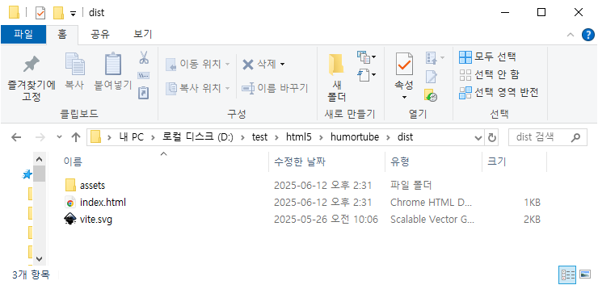
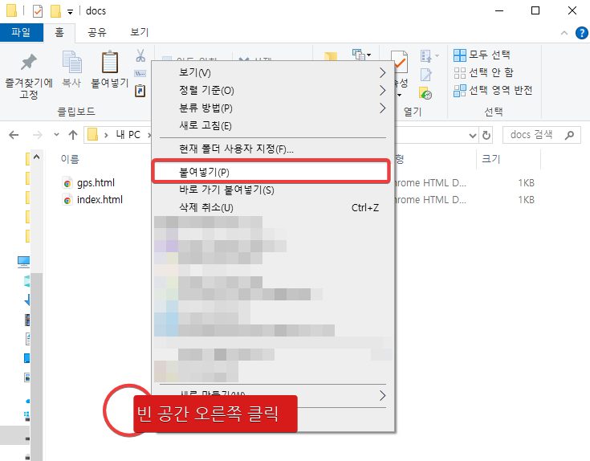
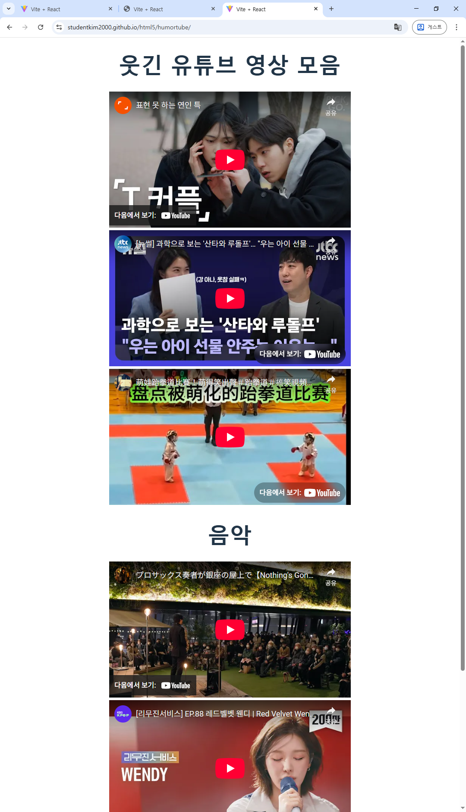
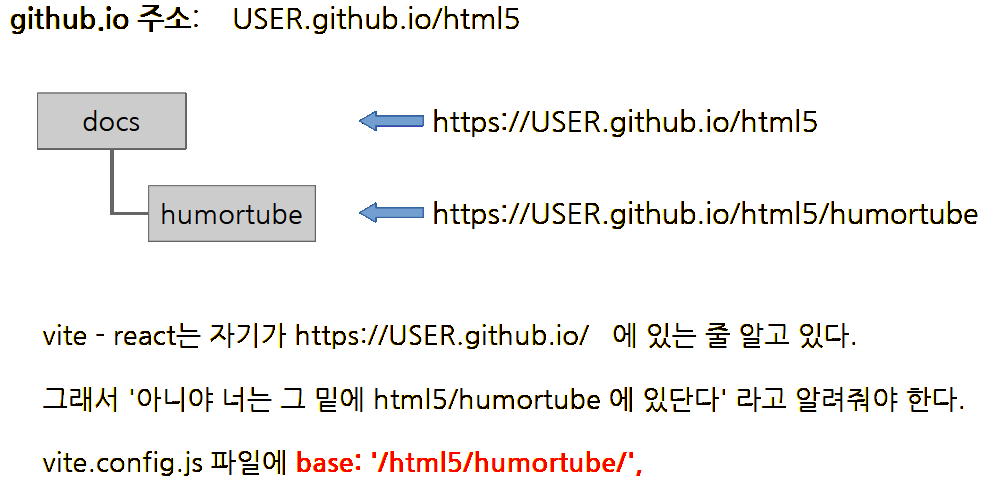

vite - react 프로젝트 빌드하고 서버에 올리기
PowerShell 여러 개 실행시키기
vscode는 PowerShell 기능을 내장하고 있다. 우리는 지금 PowerShell 기능을 이용해 프로젝트를 실행하고 있다.
그리고 PowerShell에서 보여주는 메시지를 참조하며 개발하고 있다 .

현재 프로젝트를 실행시키며 로그를 보여주고 있는 PowerShell.
PowerShell이 하나 밖에 없는 상황에서는 PowerShell을 이용해 뭔가 다른 걸 시키려면 현재 PowerShell이 하고 있는 일을 멈춰야 한다.
PowerShell 영역을 한 번 클릭하고
ctrl + c 키를 누르면 PowerShell이 멈춘다.

그런데 이렇게 되면 우리의 웹브라우저도 먹통이 된다.

npm run dev 를 실행시켜 다시 프로젝트를 실행시켜 놓자.

그런데 다행히도 vscode에는 이런 일이 벌어지지 않도록 여러 개의 PowerShell을 실행시킬 수 있다.
그러니까 지금 프로젝트를 실행시키고 있는 PowerShell은 그냥 놔두고 새로운 PowerShell을 실행시킬 수 있는 거다.

저 버튼을 클릭하면 창이 반으로 나눠지고, 오른쪽에 PowerShell 이 나타난다.

PowerShell이 반으로 나뉘며 오른쪽에 새로운 PowerShell이 나타났다.
그러니까 프로젝트 실행은 멈추지 않으면서 새로운 기능을 수행하고 싶을 때 이렇게 PowerShell을 하나 더 띄운다.
프로젝트 build
여태까지는 테스트용으로 웹브라우저에서 그 결과를 봤다. 테스트용은 말 그대로 테스트에 관련된 많은 정보를 담고 있다. 실제 서비스할 때는 필요없는 정보들까지 포함되기 때문에 용량도 크고 속도도 느리다.
실제 서비스하기 위한 버전을 만드는 것을 build라 한다.
실제 서비스하기 위한 버전은 훨씬 작고 속도도 빠르다. 서비스에 꼭 필요한 정보 외에 것들은 모두 빼버리기 때문이다.

새로 만들어진 오른쪽 PowerShell 창에서 npm run buld를 해준다.
npm run build

맨 마지막처럼
built in OOOms
같은 문구가 보이면 서비스용 버전으로 만드는 것, build에 성공한거다.
테스트할 때는 아무 문제 없는 것처럼 보이다가 build 할 때 엄청 많은 에러를 내기도 하기 때문에 한 번에 성공했다면 꽤 행운이다.
이렇게 build 된 서비스용 버전은 dist 폴더에 저장된다. dist는 distribute(배포)의 약자이다.
우리의 dist 폴더인 D:\test\html5\humortube\dist 폴더로 가보자.

이렇게 파일 몇 개만 단촐하게 있는 걸 볼 수 있다.
build 결과물 웹호스팅
이제 이 파일을 이용해 웹호스팅을 받아보자.
우리는 github에 html5 라는 이름의 레포지토리를 만들었고 D:\test\html5에 복제해 사용하고 있다.
그리고 docs 폴더에 html 파일들을 놓아두면 그게 웹호스팅이 되어 전세계 어디에서나 접속할 수 있다.
전송할 준비
방금 만든 dist 폴더도 docs 폴더 안에 놓아 웹호스팅을 받도록 하자.

D:\test\html5\dist 폴더를 오른쪽 클릭하고 ’복사’를 선택한다.

D:\test\html5\docs 폴더로 이동한 후 탐색기 안의 빈 공간을 오른쪽 클릭하고 ’붙여넣기’를 선택한다.

F2키를 눌러 이름바꾸기 모드로 들어간 다음,

’humortube’로 이름을 바꾼다.
github desktop을 이용해 서버로 업로드
이제 github desktop을 이용해 서버로 업로드하자.

[1] 부분에 이번 저장의 묶음에 대한 설명을 달자. 예를 들면, ’humortube 업로드’와 같은 식이다.
[2] 파란색의 [Commit OO files to main] 버튼을 누른다. 위 사진에서는 6 files라고 나오지만 이걸 따라하는 여러분은 훨씬 많은 file을 commit 할 거다. (글쓴이는 중간에 계속 commit하며 만들었기 때문에 숫자가 다름)

commit 이 되면 파란색 [push origin] 버튼이 나타난다. 이 버튼을 눌러 서버로 전송하자. (commit은 내 컴퓨터에만 변화가 저장되는 것임)
이제 2-3분 후에 우리의 github.io page로 가보자.
우리가 접속해야 할 주소는 github.io가 알려준 주소 뒤에 /humortube를 덧붙여야 한다 .
github.io가 알려준 주소 안에 humortube라는 폴더를 만들고 그 안에 build 한 자료를 넣었기 때문이다.

강사의 경우, https://studentkim2000.github.io/html5/humortube 가 방금 올린 humortube의 주소이다.

그런데 어렵게 찾아가도 막상 가 보면 아래와 같이 빈 칸으로 보일 거다.

이유는 우리가 docs 안에 폴더로 저장했기 때문인데, (= /humortuber 가 붙게 만들었기 때문) 쉽게 해결할 수 있다.
humortue 폴더 밑에 vite.config.js 파일을 수정하면 된다.
import { defineConfig } from 'vite'
import react from '@vitejs/plugin-react'
// https://vite.dev/config/
export default defineConfig({
base: '/html5/humortube/',
plugins: [react()],
})
base: '/html5/humortube/',
기존 코드에서 base: 부분을 추가했다.
다시 build 하고, commit, push 하고 잠깐 후에 다시 refresh 하면,

내가 만든 앱이 전세계 어디에서나 접속할 수 있는 상태가 되었다. 물론 핸드폰에서도 볼 수 있다.
vite.config.js 파일을 수정하는 이유
